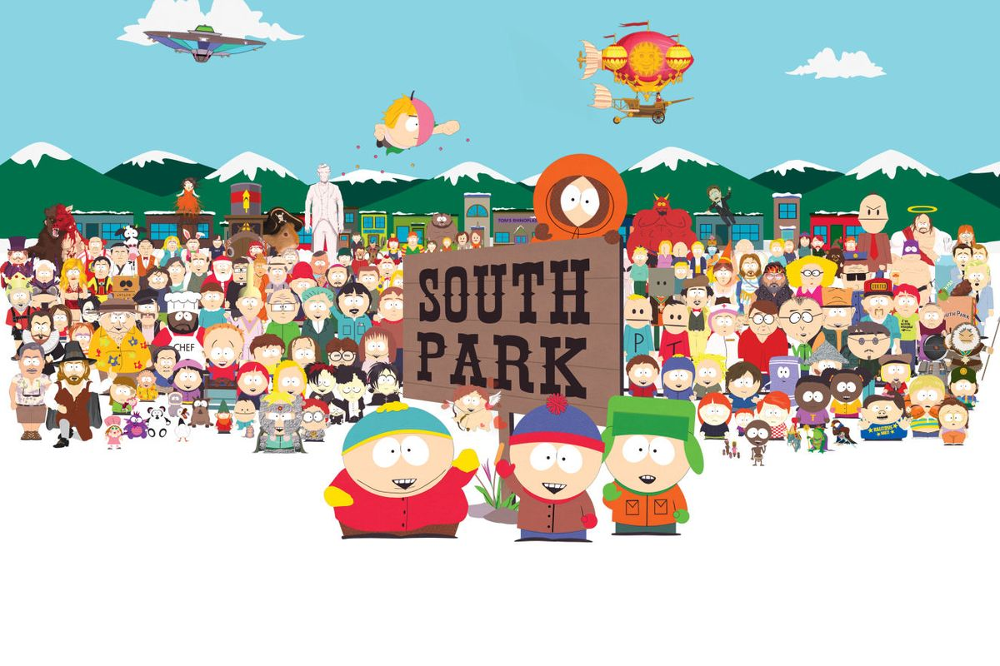

South Park is an American animated sitcom created by Trey Parker and Matt Stone and developed by Brian Graden for Comedy Central. The series revolves around four boys—Stan Marsh, Kyle Broflovski, Eric Cartman, and Kenny McCormick—and their exploits in and around the titular Colorado town. The show became infamous for its profanity and dark, surreal humor that satirizes a wide range of topics towards a mature audience.
Parker and Stone developed the show from The Spirit of Christmas, two consecutive animated shorts. The latter became one of the first Internet viral videos, ultimately leading to South Park's production. The pilot episode was produced using cutout animation, leading to all subsequent episodes being produced with computer animation that emulated the cutout technique. South Park features a very large ensemble cast of recurring characters. Since its debut on August 13, 1997, 307 episodes of South Park have been broadcast. It debuted with great success, consistently earning the highest ratings of any basic cable program. Subsequent ratings have varied but it remains one of Comedy Central's highest-rated shows and is slated to air new episodes through 2022.